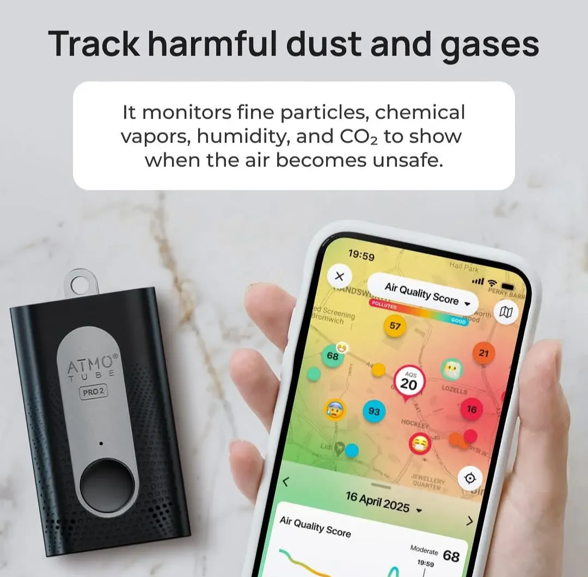

Web-Scraped & Collected COPD Patient Comments
These excerpts were collected from public COPD resources, forums, YouTube videos, and the Reddit community r/COPD. They reflect anecdotal patient experiences with treatments, diets, and supplements that individuals felt helped their symptoms.
My husband was diagnosed summer 2023. We've had some very scary episodes of coughing and breathing issues and we were very glum about the future. To stop a coughing fit he takes dissolving co-codemol and hot covonia the cough stops within minutes or one dissolvable before a workout. At 66 and Never a great fitness fan he started going daily to the gym….. we have a decent treadmill punch bag cable machine weight bench and other accessories in the garage. He now does a work out at least 5 x a week. His health has progressed back to before he developed symptoms.
Diagnosed 2021. Quit smoking right away, started light breathing exercises, added high antioxidant (green tea) once a day to diet, switched to keto diet low carb no sugar. So far have cut inhaler use in half and sometimes forget to take them. Only 3 years in, will see how it goes.
1
People need to look at the many studies where melatonin has vastly improved peoples health and its ability to improve lung function.
After suffering from COPD for about ten years I adopted healthy keto, intermittent fasting, and 5K of walking each day. After four months on this program I revisited my pulmonary specialist and took the lung function tests again. The doc told me I no longer had COPD and was very puzzled that I was able to ove rcome a chronic, "incurable", disease. By the way, over the four months I lost 80 pounds, my insulin has gone from 100 to 7 units a day, my A1c is now under 6.0, I have eliminated all my blood pressure medications (with the help of a sympathetic internist), and my prescription drug costs are running about 25% of last years marks. Thanks Dr. Berg.
I have lung failure and on continuous oxygen. I NEVER smoked, HOWEVER I was raised in an Arizona copper smelter town until age 17 when I left for college. Somedays the smoke was so thick it looked like fog. You could taste it as you functioned with daily work, play etc. Now after a full life, 7 kids, a professional career etc. I am tethered to a 50 ft. 02 hose and cannula. I am grateful. It allows me to still be present to enjoy my family, garden, cook, sew, etc. The KETOGENIC WAY OF EATING with intermittent fasting has helped me immeasurably. I've now lost 78 lbs with 60 more to go. The inflammation is way down. I can perceive small changes in 02 needs but I am still Hypercapnic and cannot stay in high CO2 areas like many restaurants, church etc. I plan on living KETO way of living with I.F. for the remainder of my life. The benefits are huge and I feel the y have helped extend my life and quality of life.
I have alpha 1 antitrypsin deficiency with severe emphysema. The keto diet changed my life. I initially went on keto for weight loss but was shocked by how much better I was able to breathe. I spent the entire summer outside which is something I wasn't able to do for about 20 years. I just couldn't tolerate heat and humidity. I just began OMAD... I feel such improvement in regards to my lungs. Less coughing, less phlegm, etc. So far, I'm really loving it. Oh to be able to breathe like a normal person again.
2
- YouTube Video
Dr. Berg: The BEST Remedy for Your Lungs (Infection, Asthma, and COPD) - YouTube Video
Dr. Berg: Intermittent Fasting and Chronic Obstructive Pulmonary Disease
3
I was diagnosed with COPD in 2006. My lung capacity was at 39%. I could hardly walk 100 meters without difficulty. I wheezed and rattled while walking. That was 2006. Today my ling capacity is at 78% and I can walk about 4 km but with difficulty. My normal cycle route is 20 km without rest. I can cycle on my recumbent for up to 75 km and still walk. I used a range of medication like Symbicort, Ventoline and Spiriva. Today I use only Spiolto and have Airomir in case of asthma attacks. From using Airomir 5 to 6 times a day I use it only once in a while and replace it when the date runs out. I was speaking with a doctor friend and he said I could not have had COPD. I have not seen my pulmonologist for 6 years now. I dont wheeze any more. I got much better after I started on Spiolto which I use daily.
I used to smoke with both hands for 40! years. I smoked about 50 hand rolled cigarettes every day. I stopped the same day I was diagnosed on my way home from my doctor. Another thing that was done to me in a trial project. They did a gastroscopi and found Helicobacter Pyroli. There have been studies in Norway when they found all astma patients had this bacteria in their stomachs. I went on a cure for this bacteria with Pantoprazol. In 2020 after a heart attack my doctors put me back on Pantoprazol which I take every day. My oxygen level stays between 96 and 98% and sometimes even 99% compared to the 87 and 89% when diagnosed.
I used Habat al Baraka which is black seed oil. (Nigella Sativa). This was recomended to me by a German guy I met while on my motorcycle trips I took a teaspon a day for about a year. Acording to islam Mohammed said that it will cure everything except death. Do a google search on it.
4
My mom has COPD. Nebulized Ambroxol could potentially help her. It is available on Amazon in Germany. In the USA, you cannot get it at all.
When my breathing turns into gurgling and I can't even sleep because of it, add teaspoon Apple Cider Vinegar, then 1 teaspoon baking soda to about 8 oz water. Makes a nice fizz and I personally like the taste. Just sip it over a few hours, or if you want, drink all at once; drink plain water in between. It helps loosen the phlegm so you can cough it up. If you can't take the vinegar, just use the baking powder. Back in the 20's they advertised on the back of the sodium bicarbonate box, recipes to use for colds and flus. Do a search on google for articles about it from Dr. Mercola's site, as well.
I also do the pursed lip exercise, and the one where you push your stomach in as you breath out loudly through your mouth. Lots of tips on internet about breath exercises. Really step up on doing these on the bad days.
One other thing that helps me: boil about 1 1/2 cups water, add 1-2 tsp baking soda, and a few drops essential oil like peppermint or eucalyptus. Pour into bowl (I use a 2 cup pyrex measuring cup, and inhale while breathing. Can put a towel over head to catch more of the steam. Likewise a hot bath with 1/2 cup sodium bicarbonate (same things as baking soda), can be helpful, very hot and steamy as you can safely handle. After a few days, I get the phlegm out and can breathe fairly well again. Good luck!
5
Comments on ZPAC Antibiotic & Prednisone for Flare-Ups
Wow, this is so helpful, I've never been sure what an exacerbation actually is. My doc prescribed me a combintion of Zpac antibiotic and Prednisone for "when I need it" and I've used it when the coughing got noticeably worse and I always have it on hand, but this explains it much better. Thank you!
I am currently on a Zpac and 20mg of Prednizone but will be cutting it back shortly just to see how it works. Also hopefully going to be starting with Ohtuvauyre (ensifentrine) if insurance approves it. Still have to use my normal Nebulizer treatments plus the new stuff. Can't mix them so is two separate treatments. New one is twice daily morning and night. Supposed to cut down on COPD flare-ups.
Gene Therapy [In Research]
Doing that involved a new gene therapy technique, explains Dr. Thébaud. Knowing that a particular protein, VEGF, a vascular endothelial growth factor, is crucial for the normal development of the lung, and that angiopoeitin-1, another angiogenic growth factor is crucial for blood vessel maturation, the team attached the proteins to an adenovirus and administered it through an aerosol directly into the lungs. In effect, the virus carried the protein to the heart of millions of lung cells. Once inside the cells, the growth factor proteins went to work doing the job they were programmed to do.
The results were striking: In microscopic images, the scientists have charted the growth of alveoli and lung capillaries. In a typically healthy lung, a complex network of capillaries encircles the alveoli. Oxygen flows from the lungs through ultra-fine epithelial and endothelial tissues into the blood; carbon dioxide diffuses from the blood into the alveoli.
ScienceDaily: Gene therapy technique for lung growth (2005)6
Doctors & Medical Professionals [COPD Foundation / Other Forums]
So, what is the answer? It is really quite sensible. Eat several small meals throughout the day. If you are at or below ideal body weight, eat foods that are high in calories. Avoid salt as much as possible since salt can cause you to retain fluid, feel bloated, and increase the workload on your heart. Avoid simple carbohydrates as these cause CO2 build-up in your blood causing less available oxygen. If you do eat foods containing carbohydrates, keep to complex carbohydrates like those found in fruits, vegetables, and whole grain bread.
For some individuals with COPD, the simple act of breathing takes more calories than what we are able to take in. The result of this is either chronic weight loss or the inability to gain weight. People experiencing this should eat snacks loaded in calories. While not considered healthy for “normal” people, these foods might be something like pudding made with whole milk, cheese that is not “reduced” or “low fat,” eggs, and buttered popcorn. If eating dairy foods (a problem for some with COPD as they can result in more mucus) drink plenty of water afterwards. Fried, greasy and spicy foods, carbonated soft drinks, and certain vegetables can also cause bloating.
Stem Cells / Regenerative Therapies for COPD
Currently, regenerative therapies are divided into extrinsic therapeutic strategies and intrinsic cell therapy methods. There has been some work looking at the potential to bioengineer fully intact 3-D lung units that could be transplanted but this is not a likely prospect for the near future. Extrinsic cell therapy refers to infusing (or endotracheal installation) of stem cells including embryonic stem cells (ESCs), induced pleuripotent stem cells (iPSs), mesenchymal stem cells (MSCs), and human lung stem cells (hLSCs). Intrinsic therapy refers to the delivery of small molecules (retinoid compounds have been the most studied) that can stimulate the endogenous lung stem/progenitor cells to regenerate and replace damaged structures (See Sun et al review paper below).
PMC: Stem cell and regenerative therapies review (PMC6190524)7
Comments on Stem Cell Therapies
Smsbiotech is about to conduct stage 2 trials for COPD treatment. The goal is to heal lung tissue. It has already almost finished stage 1 in Australia. The process is being expedited to allow access to treatment asap. The fact they are now scheduling phase 2 trials at Cleveland clinic means the initial trial has proven positive results. It is a nebulized therapy and off the shelf meaning no invasive procedure to treat COPD.
Regen001 trials are compiling data for the completed stage 2 clinical trials and stage 3 will be underway next year most likely. It is a Chinese initiative. They harvest a pts p63+ progenitor cells from lung via bronchoscopy. These cells are then reproduced in lab into large quantities. The reproduced cells are then administered via bronchoscopy to the most damaged areas of lung. It has proven to heal mild emphysema lesions during stage 1 with an average improvement in fev1 and fev1/fvc of ~10%. So if your fev1 is 83 it will be 93% post treatment, possibly more, maybe a little bit less.
8
A Novel Approach to Acute COPD [Azithromycin]
LOS ANGELES (Sept. 6, 2011) -- Richard Casaburi, Ph.D., M.D., principal investigator at Los Angeles Biomedical Research Institute (LA BioMed), is co-author of a recent study that should help improve the condition for the millions of individuals who suffer from chronic obstructive pulmonary disease, better known as COPD. The results of the study reveal that adding a common antibiotic - azithromycin - to the usual daily treatment for COPD reduced the occurrence of acute exacerbations by 27% and tended to improve the quality of life for COPD patients. The results of the study, funded by the National Heart, Lung, and Blood Institute (NHLBI), part of the National Institutes of Health, appeared in the Aug. 25 issue of the New England Journal of Medicine.
"This important study adds to a growing number of approaches that reduce the frequency of COPD illnesses," said Dr. Casaburi. "Together, they promise COPD patients who avail themselves of readily-available therapies substantially reduced risk of acute lung illnesses. This has the potential to reduce the misery this disease brings and can also can bring down medical costs, as more than half of COPD costs are related to hospitalization for COPD-related illnesses."
At 10 regional centers around the United States, the study recruited 558 study participants who took 250 mg of azithromycin daily for a year, in addition to their usual care. They averaged 1.48 acute COPD exacerbations annually, compared to 1.83 exacerbations for the 559 participants who received traditional care without azithromycin. The participants taking azithromycin also tended to report more favorable breathing ability and overall well-being.
EurekAlert: Azithromycin study summary (2011)Zephyr Valves & BREATHE-3
There's a potential new treatment for severe emphysema, and Philadelphia is a key test site for this small device with big potential to improve lives. Now, Temple is taking part in BREATHE-3, the final trials of a new tool.
Dr. Gerard Criner, director of the Temple Lung Center.
I had the Zephyr valves placed about 18 months ago. I had to stay in the hospital for 2 full days post op, as they want to be sure you wont have a collapsed lung. It has been life changing.
9
Peptides for COPD
BPC-157, TB-500 & VIP
The stable gastric pentadecapeptide BPC 157 acts as a prototype cytoprotective agent that maintains endothelium, and its application may be a novel therapy. Besides, BPC 157 prevents and reverses thrombosis formation, maintains platelet function, alleviates peripheral vascular occlusion disturbances, and has anti-arrhythmic and anti-inflammatory effects.
COPD & The Gut-Lung Axis
Recent research has established the link between the lungs and the gut—the gut-lung axis -and the gut microbiome is a major component. The gut microbiome is likely perturbed in COPD, contributing to chronic inflammation. Diet is a readily modifiable factor and the diet of COPD patients is often deficient in nutrients such as fibre. The metabolism of dietary fibre by gut microbiomes produces anti-inflammatory short chain fatty acid (SCFAs), which could protect against inflammation in the lungs.
PubMed Central: Gut-lung axis in COPD (PMC6831926)Other Links
- YouTube Video
Dr. Mandell: 1 Cup a Day Will Keep Lung Problems Away - YouTube Video
Understanding COPD - YouTube Video
Dr. Ken Berry: COPD: There is Hope (Ways to Improve COPD) - YouTube Video
Dr. Berg: The Best Remedy for Your Lungs (Infection, Asthma, and COPD) - YouTube Video
The Best Vitamin for Your Lungs (Healing & Breathing) - YouTube Video
Get Rid of COPD Symptoms Naturally
Devices, Apps, & Others
Atmotube PRO 2 Air Quality Tracker
Designed to help you understand and protect your health wherever you go. It continuously monitors the air around you, detecting CO2, PM1, PM2.5, PM10, NOx, VOCs, temperature, and humidity.
10
11
A spirometry test showed an FEV1 of 51%. After doing a bit of research online I found that COPD is an inflammation problem, a bit more research t aught me that sugar, grains, vegetable oil and starchy vegetables are inflammatory foods so I dived straight in to a keto diet.